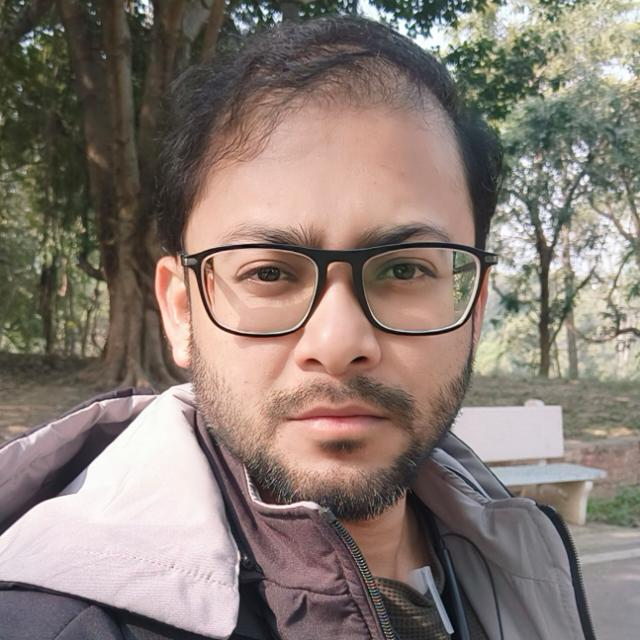

Mahbub Rahaman
Postdoctoral Fellow
Department of Physics
Harish-Chandra Research Institute
Prayagraj 211019, India
Google Scholar · arXiv · ORCID · GitHub · ResearchGate · Academic Tree
I am a postdoctoral fellow at the Harish-Chandra Research Institute (HRI), Prayagraj, where I work with Dr. Sayan Choudhury under India's National Quantum Mission. I received my Ph.D. in physics from the University of Burdwan in 2025, advised by Dr. Analabha Roy.
My research is in non-equilibrium quantum many-body physics. I study how isolated quantum systems thermalize and the routes by which they can avoid it, such as many-body localization, quantum scars and Hilbert-space fragmentation. Much of this work is on periodically driven (Floquet) systems and the phases they host, including discrete time crystals and chimera-like states. I am also interested in topological phases of matter, quantum metrology and neural-network methods for many-body problems.
My work is mostly analytical, combined with numerical simulation. Analytical work is how I understand the physics of a problem: which mechanism is responsible, and why. Numerical simulation is how I find out whether that understanding is actually true, since interacting many-body systems rarely allow exact solutions.
Research
Publications
Journal articles
- M. Rahaman and A. Roy, “Discrete time crystal order in spin chains enabled by Floquet flat bands,” Phys. Rev. B 114, 034311 (2026). DOI · arXiv
- M. Rahaman, A. Sakurai and A. Roy, “Time crystal embodies chimeralike state in periodically driven quantum spin system,” New J. Phys. 26, 063035 (2024). DOI
- M. Rahaman, T. Mori and A. Roy, “Phase crossover induced by dynamical many-body localization in periodically driven long-range spin systems,” Phys. Rev. B 109, 104311 (2024). DOI
- S. K. Mondal, S. Pal, A. Sen, M. Rahaman and S. K. Midya, “Long-lasting disturbances in the mid-latitude sub-ionospheric VLF radio signals due to the super geomagnetic storm of 17 March 2015,” Adv. Space Res. 68, 2295–2308 (2021). DOI
Preprints
- R. Chandra, M. Rahaman, S. Majumdar, A. Roy and S. Sarkar, “Integrable Floquet time crystals in one dimension,” under review (2025). arXiv:2510.04326
In preparation
- M. Rahaman, S. Majumdar and A. Roy, “Quantum heat engine in DMBL-constrained periodically driven clean spin chain.”
Others
Positions and education
- Postdoctoral Fellow, Harish-Chandra Research Institute, 2025–present Quantum sensing and metrology, non-equilibrium many-body dynamics. Mentor: Sayan Choudhury.
- Ph.D. in Physics, The University of Burdwan, 2025 Thesis: Symmetry Breaking and Quantum Localization in Periodically Driven Many-Body Systems. Advisor: Analabha Roy.
- M.Sc. in Physics (specialization: Electronics) Dissertation: Response of very low frequency (VLF) waves to solar flares of varying strengths at different times of the day. Advisor: Sushanta K. Mondal.
- B.Sc. (Honours) in Physics
- Summer School in Quantum Information and Technology, IISER Kolkata, June–July 2021